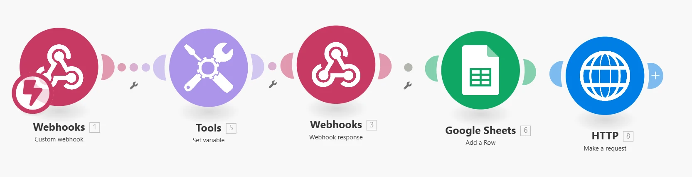

Guia completo de implementação e automação de webhooks
Este guia apresenta a implementação da integração entre uma plataforma de chat e o Make.com, conforme o fluxo definido no desafio técnico.
Para esta implementação, foram utilizados:
O fluxo implementado no Make segue exatamente o padrão solicitado no desafio:
Foi configurado um webhook personalizado chamado "Trial Webhook" para receber os dados enviados pela plataforma de chat:
Este webhook é o ponto de entrada no sistema Make, recebendo os dados quando um cliente em teste grátis inicia uma conversa na plataforma de chat.
No lado da plataforma de chat, foi configurado o envio de dados para o webhook no Make:
{
"LinkdaConversa": "https://plataforma-chat.com/chats/{{Conversa.Id}}",
"NomePrincipalDoContato": "{{Contato.NomeCompleto}}"
}
Após o recebimento dos dados pelo webhook, foi configurada uma variável "Data_Atual" utilizando a função:
formatDate( now ; DD/MM/YYYY HH:mm:ss )
Esta variável armazena o momento exato em que os dados foram processados no Make, garantindo consistência no registro temporal das interações.
A etapa seguinte configura o registro dos dados na planilha do Google Sheets:
A estrutura da planilha foi organizada para facilitar a consulta e análise posterior dos registros.
A solução está operando corretamente, com os dados sendo registrados na planilha conforme o exemplo:
| LinkDaConversa | NomesCompletos | Data |
|---|---|---|
| https://plataforma-chat.com/chats/abc123 | Nome Exemplo | 21/05/2025 21:15:01 |
Após o registro na planilha, foi configurado um módulo HTTP para enviar uma nota no chat da plataforma:
{{1.LinkdaConversa}}/notes (onde LinkdaConversa é a URL recebida via webhook){
"content": "Registro feito no Google Sheets para {{1.NomePrincipalDoContato}} às {{formatDate(now; DD/MM/YYYY HH:mm:ss)}}"
}
Além disso, o fluxo envia uma resposta ao webhook confirmando o processamento bem-sucedido:
{
"status": "sucesso",
"message": "Webhook processado com sucesso pelo Make."
}
Esta confirmação garante que a plataforma de chat reconheça que o processamento foi concluído com êxito.
O fluxo completo implementado na plataforma de chat segue o diagrama proposto:
A integração completa possibilita:
Esta implementação atende completamente aos requisitos estabelecidos no desafio técnico, proporcionando uma automação eficiente do processo de atendimento a clientes.
%% Diagrama de integração Umbler Talk + Make
flowchart TD
subgraph "Umbler Talk"
A[Cliente entra em contato] --> B{Cliente está em teste grátis?}
B -- Sim --> C[Chama Webhook para o Make]
C --> D[Envia mensagem de transferência]
D --> E[Transfere para setor]
B -- Não --> F[Envia mensagem de boas-vindas]
F --> G{Qual atendimento precisa?}
G -- Financeiro --> H[Envia mensagem de transferência]
H --> I[Transfere para setor Financeiro]
G -- Técnico --> J[Envia mensagem de transferência]
J --> K[Transfere para setor Técnico]
end
subgraph "Make.com"
L[Recebe Webhook] --> M[Registra em uma planilha: link da conversa, data e nome do contato]
M --> N[Envia nota no chat avisando do registro]
N --> O[Fim]
end
C -. POST com dados do cliente .-> L
H -. POST com mensagem .-> N
J -. POST com mensagem .-> N
O fluxograma acima representa de forma visual o processo completo de integração, mostrando claramente: